入梦者One input. More than one self.
在推箱解谜中加入灵体、实体与多实体同步控制，让一次输入成为一组需要提前安排的行动。

01灵体与实体：两个行动规则集
《入梦者》以推箱为基础，用浅睡和深睡把“能到达某个位置”与“能在那个位置行动”分开。深睡期由实体推进箱子和局面；进入浅睡期后，实体停留，灵体从其位置出发，能够越过部分普通障碍，却不能推动箱子。
| 阶段 | 可执行的行动 | 资源与空间限制 |
|---|---|---|
| 深睡／实体 | 移动、推箱，并让多个实体响应同一输入 | 主动移动消耗行动点，同时累计清明点 |
| 浅睡／灵体 | 穿过普通障碍寻找新位置，不推动箱子 | 移动消耗清明点；地图边界仍然限制移动 |
| 返回深睡 | 将灵体当前位置固定为新的实体 | 不合法的落点可能使新实体死亡；必须提前判断占位 |

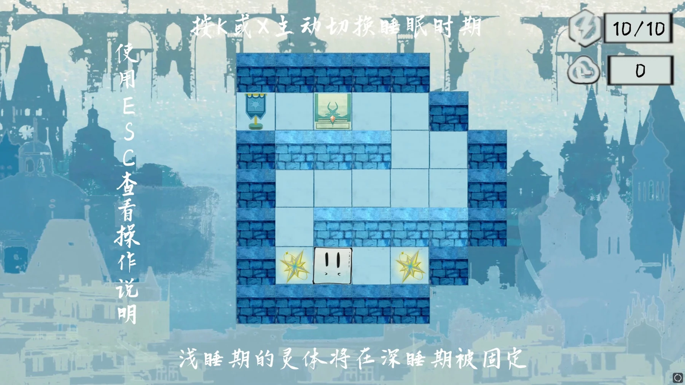
看一次切换，而不是只记住状态名称
下面两帧来自同一段本地演示。浅睡时，灵体已经离开原位置，而原实体仍留在下方；返回深睡后，上方位置也形成实体。变化的结果不是“换了一个皮肤”，而是后续输入需要同时处理两个位置。

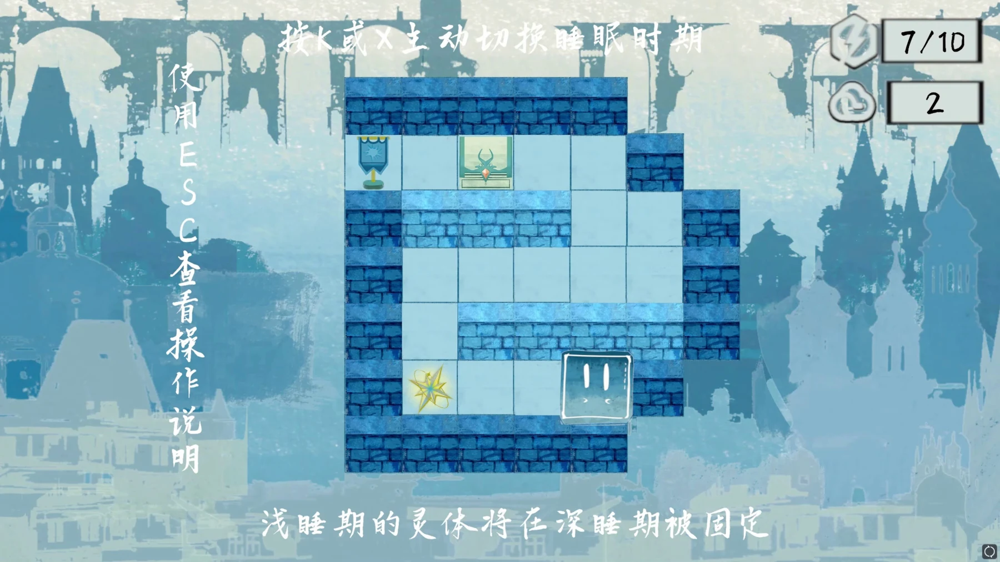

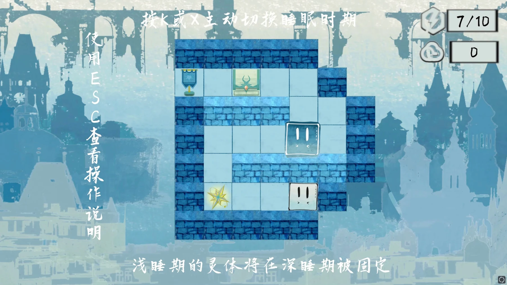
这组对照把“穿过障碍”和“在障碍另一侧建立可操作实体”连起来。进入浅睡之前，就应考虑下一次深睡时两个实体能否共同推进，而不是只追求当前灵体走得更远。
02行动点与清明点如何形成循环
两种资源有不同作用：行动点限制实体阶段可消耗的有效动作，清明点决定灵体阶段可探索的距离。深睡期的一次有效移动会消耗一个行动点并积累一点清明点；浅睡期移动消耗清明点而不消耗行动点。
浅睡移动：A′ = A，C′ = C − 1
A 表示行动点，C 表示清明点；这是对设计案规则的形式化整理。
玩家因此不能只问“箱子要推几步”，还要问“我准备在哪个时刻进入浅睡、需要走多远、在哪里固定新实体”。当清明点耗尽或主动返回深睡时，实体布局发生变化，新的控制局面就建立起来。

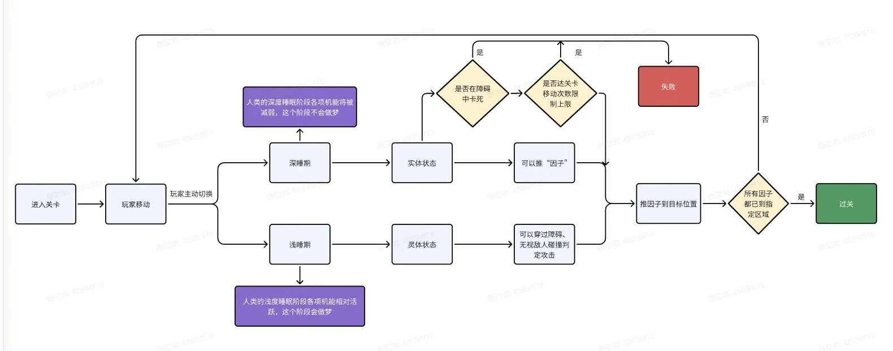
03一个输入如何控制多个实体
一次“深睡→浅睡→深睡”的往返，可以在原有实体之外增加一个实体。后续按键同时作用于多个实体，但一次有效行动仍统一计一次行动点，而不是按实体数量重复扣除。于是，新增实体的收益来自位置关系：同一次输入，可能让某个实体推进任务，让另一个实体等待、受阻或离开关键位置。


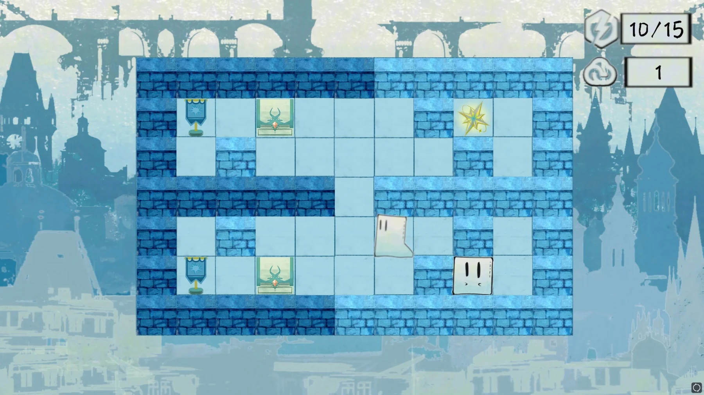
真正的约束来自位置关系
在这两帧里，重要的不是复制数量，而是同一次输入会如何改变两条通路。关卡可以用墙体、转角和箱子制造差异：一个实体需要移动时，另一个实体是否也会离开有利位置？设计的核心是让玩家学会安排这种相互影响。

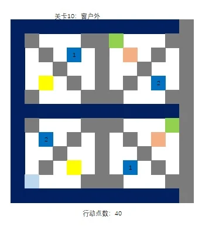

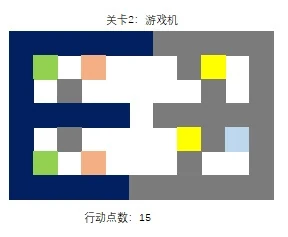
设计案建议尽量让关卡可用两个实体完成，给更多实体留下解法空间。这个约束有助于控制最低理解成本，也让关卡重点落在位置安排与时机，而不是单纯堆积可控对象。
04关卡元素与“可达／可用”的区别
传送门为何不影响灵体
传送门可以改变实体和箱子的位置，却不传送灵体。相同位置上的对象因为阶段不同而遵循不同规则，玩家需要在进入灵体之前理解后续的实体路线。
能穿过去，不等于能在那里落下
灵体可以穿越障碍，但返回实体时仍可能因为墙体、箱子占位而被挤出局。这个区别让浅睡阶段承担“布局”的角色，而不是直接跳过所有空间限制。
用同一套符号管理不同关卡
关卡表对箱子、目标点、星星、两类障碍、实体／灵体和传送门使用统一图例，再分别给出行动预算。先固定元素含义，再调整空间组合，才能知道难度变化来自布局，还是来自新增规则。

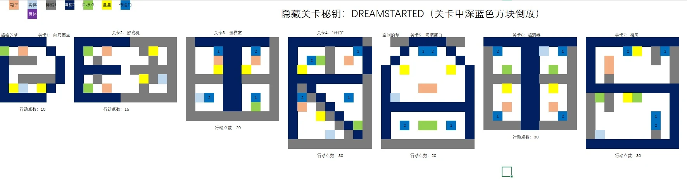
05这一关怎样让空间在下一步改变
这一关把多个角色位置、两种资源和旋转预告放在同一张画面里。“现在能站在这里”仍不足以决定下一步操作，还需要判断空间变化后哪些位置依然可用。

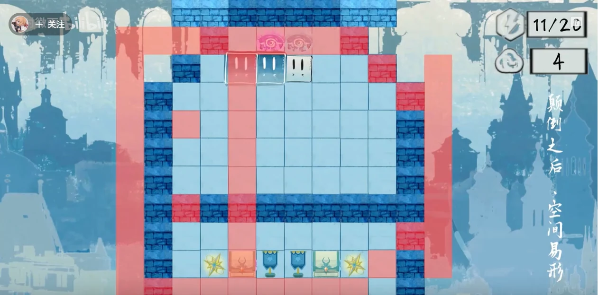
| 读图顺序 | 应观察什么 | 它对决策的影响 |
|---|---|---|
| 01 / 角色位置 | 上方几处实体／灵体位置，以及它们与墙体、传送门的相对关系 | 不是只检查当前操控点，而是检查下一阶段需要保留的实体布局 |
| 02 / 空间预告 | 当前蓝色墙体与红色预告区域的叠加 | 旋转前可用的位置，在旋转后可能成为障碍或落在边界之外 |
| 03 / 资源预算 | 截图中的 11/20 行动点与 4 点清明点 | 实体行动会推进空间变化的时机，灵体移动则消耗另一种布局预算 |
一次旋转改变的是空间关系
设计案为“空间的梦”设置了按行动点触发的地图顺时针旋转，并要求处理旋转后的占位与边界。它把原来的“先推哪个箱子”扩展为“地图变化后，我希望哪些角色留在哪里”。下面对照来自同一关卡的另一段演示：用连续两帧观察旋转怎样改变空间。

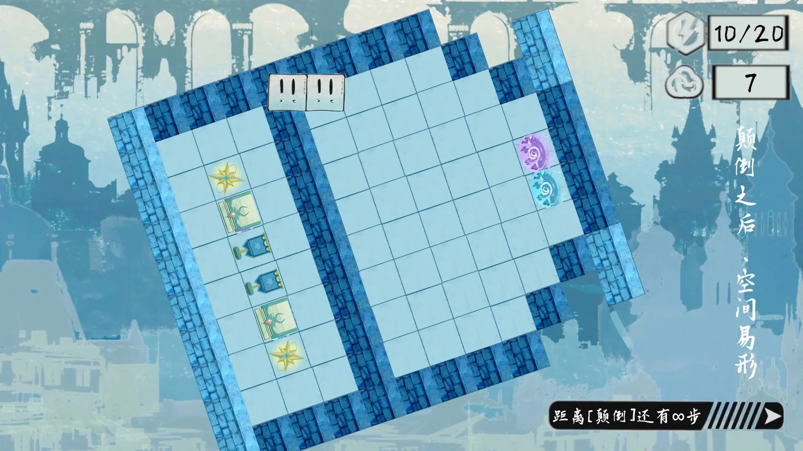

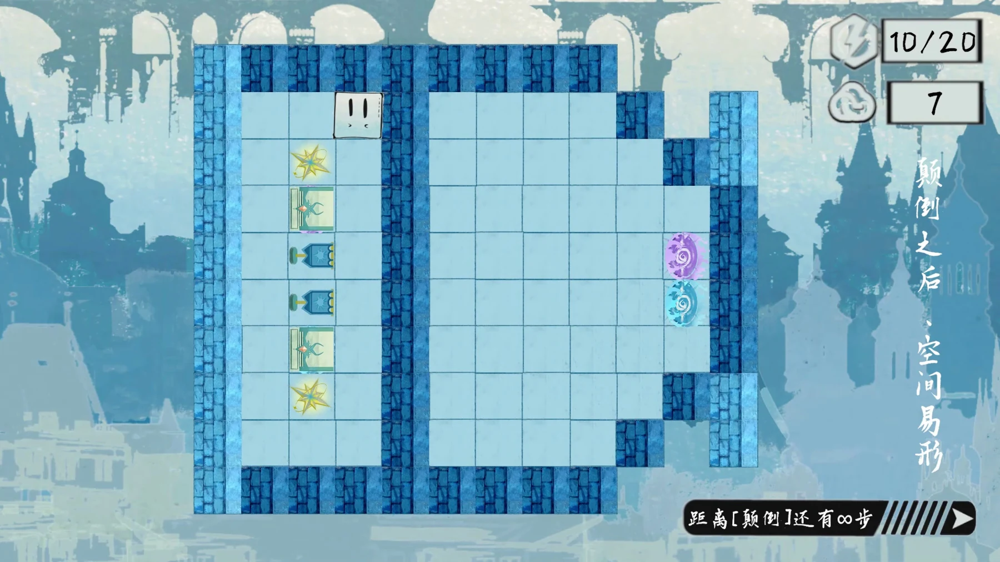
地图旋转期间，右侧计数保持不变，通路和目标区的朝向却发生变化。这要求玩家在消耗触发旋转的行动点前，提前安排角色位置与后续路径。

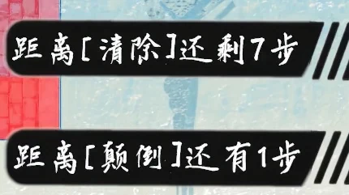

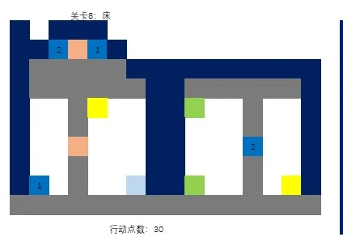
06用界面与撤回降低试错负担
多实体规则天然带来预测负担，所以反馈需要明确显示行动点、清明点、章节机制与当前状态。撤回让玩家可以修正一次局部决策，而不是在很长的操作链后重新开始。关卡选择用章节和可见进度组织探索，把复杂性留给局内，而不是菜单。

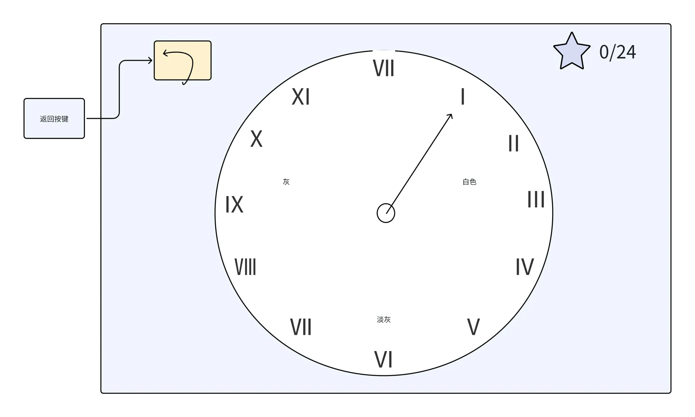

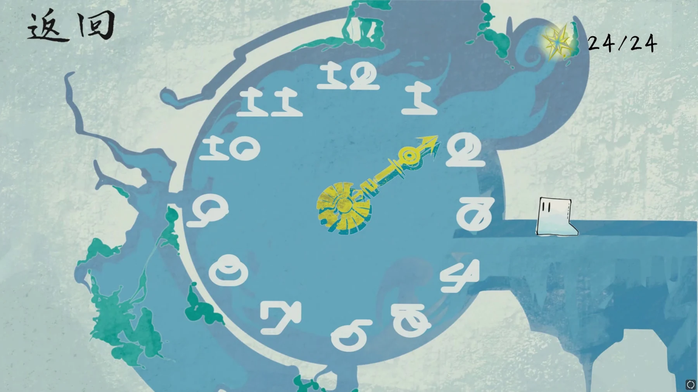
剧情中的脑区、梦境与隐藏叙事用于主题表达，不是神经科学实验结论。对我而言，这一项目的重点是让状态、空间与故事共用一套规则语言。
07我的职责与可继续打磨的部分
我的工作
总体游戏流程、关卡配置、场景布设，以及剧情和美术资源需求沟通。
协作与基础
团队共同完成 Game Jam 作品；程序与美术属于协作产出，案例区分实际画面、机制图稿与拓展规划。
值得继续验证的是：玩家何时第一次理解“灵体是布局工具”，以及多个实体响应同一输入时，哪些失败是有信息价值的，哪些只是在增加记忆负担。这些问题比继续增加章节规则更直接影响解谜体验。